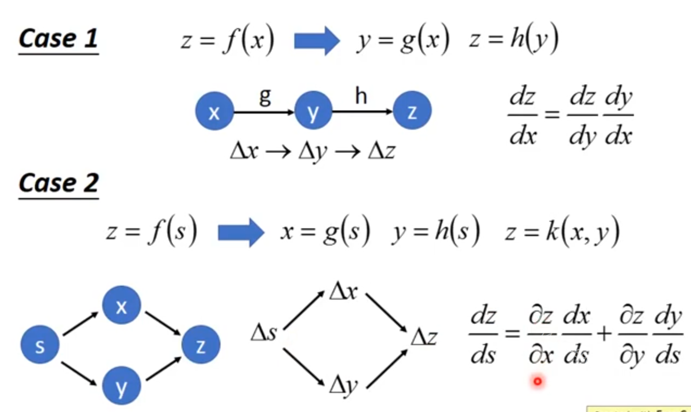
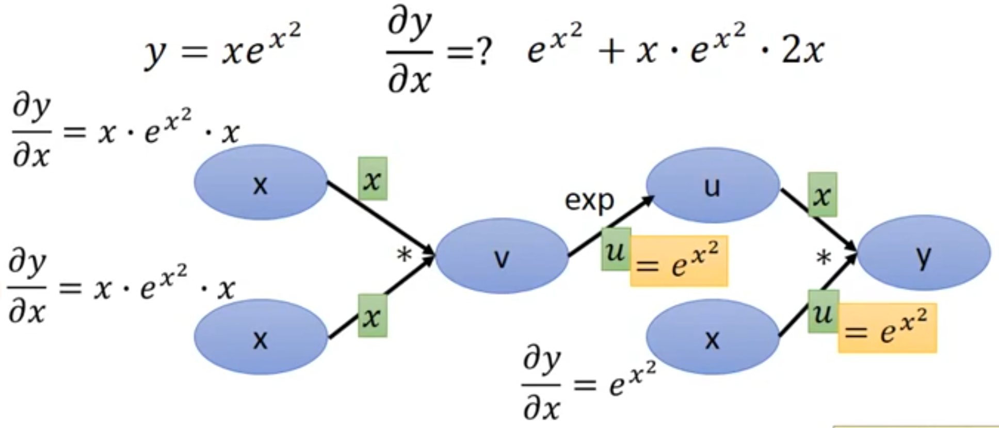

微积分中的链式法则（为了不与概率中的链式法则相混淆）用于计算复合函数的导数。
反向传播是一种计算链式法则的算法，使用高效的特定运算顺序。
1. 变量是实数
设x是实数，f和g是从实数映射到实数的函数。
假设y=g(x)并且z=f(g(x))=f(y)。
那么链式法则是说
dxdz=dydzdxdy(6.44)
[success]

同一条链路上两个相邻结点之间的偏导相乘
多条并行链路上的偏导结果相加

参数共享的情况，先把3个x当作不同的x来看，算完以后再结果全部加起来。
2. 变量是向量
我们可以将这种标量情况进行扩展。
假设x∈Rm,y∈Rn，g是从Rm到Rn的映射，f是从Rn到R的映射。
如果y=g(x)并且z=f(y)，那么
∂xi∂z=j∑∂yj∂z∂xi∂yj
[success]
相当于从xi出发，通过多条路径(所有的yj)到达z。
多条并行的链路是相加的关系。
使用向量记法，可以等价地写成
∇xz=(∂x∂y)⊤∇yz(6.46)
这里∂x∂y是g的n×m的Jacobian矩阵。
[success]
公式6.46可以看作是公式6.44的高维形式。
dydz中的z是标量，y是向量，向量对标量的偏导仍是向量，记做∇yz
dxdy中的y是n维向量，x是m维向量，向量对向量的偏导是Jacobian矩阵，矩阵大小为n×m。
从这里我们看到，变量x的梯度可以通过Jacobian矩阵∂x∂y和梯度∇yz相乘来得到。
反向传播算法由图中每一个这样的Jacobian梯度的乘积操作所组成。
3. 变量是张量
[warning] 为什么跳过了变量是矩阵
通常我们将反向传播算法应用于任意维度的张量，而不仅仅用于向量。
[success]
这里的“反向传播算法”是指逆着计算图箭头的方向批量计算偏导的过程。（见6.5.3）
不限于前馈网络中的backprop算法。
从概念上讲，这与使用向量的反向传播完全相同。
唯一的区别是如何将数字排列成网格以形成张量。
我们可以想象，在我们运行反向传播之前，将每个张量变平为一个向量，计算一个向量值梯度，然后将该梯度重新构造成一个张量。
从这种重新排列的观点上看，反向传播仍然只是将Jacobian乘以梯度。
[warning] ?[?] 这一段看不懂
为了表示值z关于张量X的梯度，我们记为∇Xz，就像X是向量一样。
X的索引现在有多个坐标——例如，一个3维的张量由三个坐标索引。
我们可以通过使用单个变量i来表示完整的索引元组，从而完全抽象出来。
对所有可能的元组i，(∇Xz)i给出∂Xi∂z。
这与向量中索引的方式完全一致，(∇xz)i给出∂xi∂z。
使用这种记法，我们可以写出适用于张量的链式法则。
如果Y=g(X)并且z=f(Y)，那么
∇Xz=j∑(∇XYj)∂Yj∂z
[warning] ?[?] 这一段看不懂